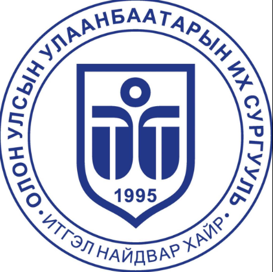

Website
instagram
youtube
facebook
Олон Улсын Улаанбаатарын Их Сургууль
Бидний тухай
Компьютер, Мэдээллийн технологийн тэнхим
1997 онд “Програм хангамж” мэргэжлээр бакалаврын сургалт явуулж эхэлснээр тэнхим байгуулагдах эхлэл тавигдсан. 2007 оноос “Мэдээллийн систем”, 2009 оноос “Техник хангамж” мэргэжлээр бакалаврын, 2007 оноос “Програм хангамж” мэргэжлээр магистрын сургалт явуулж байна.
Өнгөрсөн 20 гаруй жилийн хугацаанд Монгол Улсын дээд боловсролын холбогдох хууль тогтоомж, мэргэжлийн стандарт, Олон Улсын байгууллагуудаас гаргасан жишиг хөтөлбөрийн дагуу сургалтын хөтөлбөрөө тогтмол шинэчилж хэрэгжүүлэн ажлын байрны эрэлт, шаардлагыг хангасан мэдээллийн технологийн мэргэжилтэн бэлтгэх талаар арвин туршлага хуримтлуулсан.
Манай тэнхим сургалт явуулж буй мэргэжлийн хөтөлбөрүүдийг дотоод гадаадын магадлан итгэмжлэлийн байгууллагуудаар хөндлөнгийн үнэлгээ хийлгүүлэх зорилт тавьж, энэ хүрээнд “Програм хангамж” мэргэжлийн бакалаврын хөтөлбөрийг 2020 онд БМИҮЗ-өөр магадлан итгэмжлүүлээд байна.
Манай тэнхимээс төгсөн гарсан 700 гаруй төгсөгчид дотоодын мэдээллийн технологийн салбарт амжилттай ажиллахын зэрэгцээ БНСУ-ын Take Systems, АНУ-ын Цахиурын хөндийн Belong Home, Uber, Dynata зэрэг гадаадын олон компаниудад ажиллаж байгаа нь манай оюутнуудад их урам зориг өгдөг.
Сургалт явуулж буй хөтөлбөрүүд
- Програм хангамж
Хөтөлбөрийн индекс: 061302
Боловсролын зэрэг: Бакалавр
Нийт багц цаг: 122кр
Магадлан итгэмжлэгдсэн хөтөлбөр
Хөтөлбөрийн суралцахуйн үр дүн
Хэрэглэгч буюу захиалагчийн шаардлагад нийцсэн компьютерийн болон
гар утасны төрөл бүрийн програмын код бичих чадвартай, мэргэжлийн өндөр ёс зүйтэй програм хангамжийн инженерийг бэлтгэнэ.
Ажлын байр
- Програм хангамжийн төслийн менежер
- Програм хангамжийн системийн дизайнер
- Програм зохиогч
- Өгөгдлийн сангийн админ
- Вэб дизайнер
- Гар утасны програм зохиогч
- Системийн шинжээч
- Сүлжээний админ
- Мэдээллийн систем
Хөтөлбөрийн индекс: 061303
Боловсролын зэрэг: Бакалавр
Нийт багц цаг: 122кр
Хөтөлбөрийн суралцахуйн үр дүн
Байгууллагын үйл ажиллагааны мэдээллийн системийг үүсгэх, хөгжүүлэх, хөтлөхөд шаардагдах мэдлэг, чадвар, дадлагыг эзэмшсэн мэдээллийн системийн инженер бэлтгэнэ.
Ажлын байр
- Програмист
- Вэб хөгжүүлэгч
- Системийн шинжээч
- Төслийн удирдагч
- Вэб дизайнер
- Сүлжээний админ
- Өгөгдлийн сангийн админ
- Электроникийн инженерчлэл